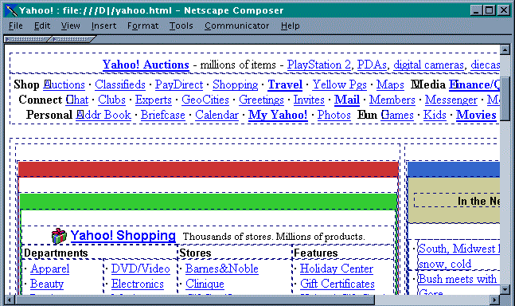

Color
-
Most well designed Web sites include Graphics and color to draw people to their
sites, to make them more attractive and easier to use.
-
However, the incorrect use of color in many Web sites creates unreadable text or
navigation confusion for the user.
Colors
- HTML identifies color in 1 of 2 ways:
- Using a color name
- Using color values for the amount of red,
green,
and blue found in the
particular color.
The 16 basic color supported by all browsers are:
Red
|
Red/Green
|
Green
|
Green/Blue
|
Blue
|
Blue/Red
|
All 3
|
Red
#FF0000 |
Yellow
#FFFF00 |
Lime
#00FF00 |
Aqua
#00FFFF |
Blue
#0000FF |
Fuchsia
#FF00FF |
White
#FFFFFF |
Silver
#C0C0C0 |
Maroon
#800000 |
Olive
#808000 |
Green
#008000 |
Teal
#008080 |
Navy
#000080 |
Purple
#800080 |
Gray
#808080 |
Black
#000000 |
- HTML requires the color values be entered as hexadecimal numbers (base
16).
- Individual digits can be 0 (0) through F(15).
- Two digit numbers can range from 00 (0) to FF (255), where 10 in Hex is
16 in decimal.
- In the numbers above the first 2 digits are for red,
the second 2 digits are for green
,
and the final 2 are for blue.
Browser Safe Colors
- Although many browsers and monitors can display a wide array of colors -
there are only 217 colors that are guaranteed to display the same way on every
browser.
Browser Safe Colors
Web Color Selection
- The Color Wheel is a tool/principle that
illustrates color relationships by organizing colors in a circle so you can
visualize how they relate to each other. It is based on the primary colors
of red, yellow,
& blue.
- All of the other colors that appear in the color wheel are derivatives of
those three primary colors. Secondary colors are created by mixing
primary colors together and tertiary colors are created by mixing
secondary colors together.
- Although there are many color combinations that can be used on your Web
pages, not all combinations work well.
- Normally, Web designers try to choose a color scheme consisting of 2 or 3
colors for their entire site. Any other colors are used very sparingly (as an
"accent" only).
- Generally there are 4 different types of color schemes that should be used
when designing your Web site:
- monochromatic scheme: One color (or "hue"), used alone.
- analogous color scheme: Hues beside each other on the wheel, which share the same undertones (i.e,
red, red-orange, orange).
-
complementary color scheme: Hues opposite each other across the color wheel (i.e,. red and green,
or yellow-orange and blue-purple) are
used together for high contrast.
- triadic
color harmony: involves 3 hues equally spaced on the wheel (in the case of
the illustrated color wheel to the right, orange-red, yellow-green and
blue-purple) which creates a 3-hue mix that is vivid and contrasting.
- Using complementary colors (blue and orange) creates exciting, even
vibrating, effects - think along the lines of MTV.
- Analogous color harmony (blue and blue-green) is less vivid, even calming
- think along the lines of Martha Stewart.
Formatting Text
- The <FONT> tag allows your to set a number of text attributes:
- COLOR, SIZE, and FACE (font type)
<FONT COLOR="red" SIZE="+1"
FACE="ARIAL">
Red Arial 14 pt
</FONT>
<FONT COLOR="#FF0000" SIZE="4"
FACE="sans-serif">
Red Arial 14 pt
</FONT>
Font Size
- Font sizes can be specified 2 different ways:
- Using a built in size number (1-7)
- Using a relative size when compared to the surrounding text (+2, -1)
| size="1" |
size="-2" |
| size="2" |
size="-1" |
| size="3" |
size="-0" |
| size="4" |
size="+1" |
| size="5" |
size="+2" |
| size="6" |
size="+3" |
| size="7" |
size="+4" |
Font Face
- Font face allows you to select the type of text that will be used when
displaying your web page. Font face can be specified using either:
- An explicit name (Arial, Times, Courier), or
- Using a generic name representing a general class of styles (serif,
monospace).
| Generic Name |
Specific Names |
| serif |
Times |
Times New Roman |
Palatino |
| sans-serif |
Arial |
Helvetica |
Verdana |
| monospace |
Courier New |
Courier |
Terminal |
| cursive |
Marigold |
Coronet |
Monotype Corsiva |
| fantasy |
Comic Sans MS |
Impact |
Wingdings |
- Since you have no idea what fonts have been installed on a particular
computer - nor which one is the default font of a particular type - it is good
practice to specify a list of fonts in order of preference:
<font face="Arial, Helvetica, Verdana, sans-serif">A sans-serif font</font>
Images
-
Most Web browsers can display inline images (that is, images next to text) that are in
Bitmap, GIF, JPEG or PNG format.
- Images take time to download and slows down the initial display of a document.
So be careful when adding images to a document.
- To include an inline image, enter:
<IMG SRC="ImageName"> or <IMG SRC="ImageName"/>
where ImageName is the URL of the image file.
Basic Graphics File Formats
Currently only 3 image file formats are supported on all major browsers: GIF, JPG and PNG.
- GIF, Graphics Interchange Format: is designed for online
delivery of graphics.
-
GIF uses a lossless compression technique
meaning no color information is discarded when the image is compressed.
-
GIF is based on a palette of only 256 colors.
- It is best used in
screenshots, line drawings, and other situations with sharp edges (e.g.
cartoons).
- It is
well suited to the Web, because it has transparency. A transparent
image (like the arrow below) works on any background color or image
because it allows the background to show through. (Without
transparency it looks a little silly).
- JPG (or JPEG), Joint Photographic Experts Group: is best for photographs
or continuous tone images.
JPGs are 24-bit images that allow millions of colors. JPG uses a lossy compression routine especially designed for
photographs. This results in a slightly lower quality photograph
but the quality difference is not noticeable on current computer
monitors.
- PNG Portable Network Graphics: was developed in response
to a decision by the UniSys corporation to start charging royalties on
the GIF format.
-
PNG can encode in RGBA-The A stands for alpha
transparency, which can make images transparent against any
background.
- Use
PNG as a substitute for GIF but since PNG does not compress your
24-bit images as well do not use it as a substitute for JPG.
- Many graphics packages support
the
PNG format, as do the latest versions of both Netscape Navigator and
Internet Explorer.
- GIF Animation: The GIF format allows you to store multiple images and
timing information about the images in a single file. This means that
you can build animations consisting of multiple static images that play
continuously, creating the illusion of motion.

Image Attributes
-
You should include three other attributes on
<IMG> tags.
- The
HEIGHT and
WIDTH attributes let your browser
set aside the appropriate space (in pixels) for the images as it downloads the rest of the
file.
- The
ALT attribute gives the image a name that appears when
your mouse passes over the image or if the image does not load into the
browser:
- For example, to include CU's mascot):
<img border="0" src="images/buffs.gif" width="106" height="78" alt="CU's
Mascot"/>

- Remember, the larger the image, the longer it will take to download.
Do Not reduce the size of an image using the
height & width
attributes. This will not reduce the image file size at all and thus
will not reduce download time. Instead use a graphics program to reduce the
image size.
Alt attributes are very important because they are used by
screen readers to enable sight-impaired people to understand your Web page.
They are also displayed in place of the image for non graphical browsers
(think PDA and phone surfers here).
Images as Hyperlinks
-
Inline images can be used as hyperlinks just like plain text:
<A HREF="../glossary.html">
<IMG SRC="ball.gif" ALT="Glossary"
ALIGN="right"/></A>
-
The border around the image indicates that it's a clickable hyperlink.
- If you do not want this border to be displayed, you can adding the
BORDER attribute and setting it to
zero.
Background Graphics
-
Background images can be a texture (linen finished paper, for example) or an image of an
object (a logo possibly).
- The background image can be very small. Using a feature called tiling, a browser takes the image and repeats it across and down to fill your browser window.
-
The background image is included in the <BODY> statement as an attribute:
<BODY BACKGROUND="../images/mainbg.jpg">
-
Generally, Web-based businesses keep their backgrounds neutral usually
preferring a plain white background:
- Occasionally, a background image can add interest to a site - but it is
usually light or has a large light area that covers most of the image:
- However, in most cases, background images detract from the professionalism
of the Web site:
Image Maps
- An image map is an image with certain sections designated as "hotspots"
that can be used as anchors for linking.
- In the picture below, the rectangular and circular regions outlined in red
are linked to different parts of CU Denver's Web site:
- The map uses measurements in Pixels to determine what area's of a given
picture should be linked where. In the picture above, pixel locations in
X & Y are shown on the left & bottom of the image.
- Rectangles require the pixel coordinates of 2 corners,
- Circles require the pixel coordinates of the center & radius, and
- Polygons require the pixel coordinates of every corner:
- The following code was used to generate the image map and make the image
above reference it:
<map id = "cudenver">
<area href = "http://www.cudenver.edu/CAM/" shape="rect"
coords="128,235,261,334"/>
<area href = "http://www.cudenver.edu/business/" shape="circle" coords="210,133,66"/>
<area href = "http://www.cudenver.edu/engineer/" shape="circle" coords="346,118,66"/>
<area href = "http://www.cudenver.edu/CLAS/" shape="rect" coords="261,186,402,285"/>
<area href = "http://thunder1.cudenver.edu/aandP/home.html" shape="poly"
coords="56,235, 56, 168, 82, 133, 186, 199,
128, 235, 57, 235"/>
</map>
<img border="0" src="../images/imap.gif" width="468" height="432"
usemap="#cudenver" alt="CU Denver Programs Image Map
Demo"/>
Image Sources
- You can acquire images form a variety of sources:
- Stock Photo Collections: Stock photo collections can cost
from thousands of dollars for a few images to under $20.00 for thousands
of images at your local computer discount store or mail-order
retailer. These collections contain royalty-free images you can
use for any Web site.
- Digital Camera/Scanner: A digital camera or a scanner allows
you to take your own photos and use them on the Web. Remember to
set the photo resolution to 72 dpi to match the computer display
resolution.
- Public Domain Web sites: Many Web sites maintain catalogs of
images online that are available for download. Some of these sites
charge a small fee and many others are free! Often these sites will
require that you reference or link to their site when using the image
and if this is their policy it is important to do so!
- Clip art: Clip art collections are also a viable source
of images for the Web. Most graphics packages can covert the
images to the GIF format and allow you to customize the clip art to your
particular needs.
- Do not borrow images from other sites. Many sites have their
images copyrighted and you could face litigation if you use someone
else's graphics, especially on a commercial site!
Graphics Tools
- You can create your own own graphics using a shareware/freeware graphics
design tool or a graphics design package. However, unless you have a
graphics design background - stick to text on colored backgrounds or
fundamental shapes and lines:
- Sources of shareware and freeware packages:
- Sources of professional graphics packages:
Tables
- HTML tables allow Web designers to create grid-based page layouts.
- Tables are used to create templates that allow the Web page designer to
control how your content display's in the browser.
- Tables are also used to present tabular information
Table Elements
- The HTML
<TABLE> element contains the table
information. The following are a list of the table elements (tags):
| Tag |
Description |
<TABLE>...</TABLE> |
Required! |
<CAPTION>...</CAPTION> |
An optional table title
|
<TR>...</TR> |
A table row (1 or more cells) |
<TH>...</TH> |
a table header cell |
<TD>...</TD> |
a table data cell |
<THEAD>...</THEAD> |
Caption and header rows here |
<TBODY>...</TBODY> |
All table data goes in body |
<COLGROUP>..</COLGROUP> |
Allows alignment of column groups |
-
The
<TABLE> and </TABLE> tags must surround the entire table definition.
- You can have any number of rows (
<TR> </TR>).
- Each row of a table is, essentially, formatted independently of the rows above and below it.
- Within a row you can have any number of cells defined by the
<TD>...</TD> or
<TH>...</TH> tags.
General Table Format
-
The most common table tags are <TR> for rows and <TD>
for cells. The example below uses these two elements inside <TABLE>
tags to make a 2X2 grid of data.
<TABLE BORDER=1> <!-- a demo table -->
<TR>
<TD> first row, first cell </TD>
<TD> first row, last cell </TD>
</TR>
<TR>
<TD> last row, first cell </TD>
<TD> last row, last cell </TD>
</TR>
</TABLE>
-
The above example looks like this when rendered in a browser.
| first row, first cell |
first row, last cell |
| last row, first cell |
last row, last cell |
Table Headers and Captions
- You may occasionally want to add a
<CAPTION> or a
header <TH> to your table. These make tabular data
easier to read
<TABLE BORDER=1> <!-- a demo table -->
<CAPTION> caption contents </CAPTION>
<TR>
<TH> first header cell </TH>
<TH> last header cell </TH>
</TR>
<TR>
<TD> first row, first cell </TD>
<TD> first row, last cell </TD>
</TR>
<TR>
<TD> last row, first cell </TD>
<TD> last row, last cell </TD>
</TR>
</TABLE>
-
The above example looks like this when rendered in a browser.
caption contents
| first header cell |
last header cell |
| first row, first cell |
first row, last cell |
| last row, first cell |
last row, last cell |
Table Attributes
- Table Attributes let you further define a number of table
characteristics. You can apply attributes to the whole table, to a row
or to an individual cell.
Table Attributes
| ATTRIBUTE |
DESCRIPTION |
ALIGN |
Specifies the position of the table with respect to the document. This
works the same as the ALIGN parameter for images. Valid values include
LEFT, CENTER and RIGHT. |
BGCOLOR |
Colors the table background just as it would when used with the
<BODY> tag. |
BORDER |
Specifies the pixel width of the border that divides table cells and the
table itself. This table is set to BORDER = "1". |
CELLPADDING |
Specifies the amount of space between the borders of a table and the
actual data in the cell. |
CELLSPACING |
Specifies the amount of space inserted between table cells. |
HEIGHT |
Specifies the height of the table in absolute pixels or as a percentage
of the available space. |
WIDTH |
Specifies the width of the table in absolute pixels or as a percentage
of the available space |
Table Row Properties
| ATTRIBUTE |
DESCRIPTION |
ALIGN |
Specifies the alignment of the text within the cells in the row. Valid
values can be LEFT, RIGHT, or CENTER |
BGCOLOR |
Specifies the background color for the table cells in the row. It works
just the same as the corresponding attribute for the <BODY> tag |
VALIGN |
Specifies the vertical alignment of text within the cells in the row.
Valid values are TOP, BOTTOM, or CENTER. |
Table Cell Properties
| ATTRIBUTE |
DESCRIPTION |
ALIGN |
Specifies the alignment of the text within the cell. Valid values can be
LEFT, RIGHT, or CENTER |
BGCOLOR |
Specifies the background color for the table cell. It works just the
same as the corresponding attribute for the <BODY> tag |
COLSPAN |
Specifies the number of columns that a single cell should span. The
default value of colspan is 1. A value of zero means the cell will span
all columns from the current column to the last column. |
HEIGHT |
Specifies the height of the cell in absolute pixels or as a percentage
of the total area. Note that all cells in that row will be sized to match
this height. |
NOWRAP |
Specifies that the text within the cell should not be word-wrapped. |
ROWSPAN |
Specifies the number of rows the cell should span. The default value of
rowspan is one. A value of zero means that the cell spans all rows from
the current row to the last row. |
VALIGN |
Specifies the vertical alignment of text within the cell. Valid values
are TOP, BOTTOM, or MIDDLE. |
WIDTH |
Specifies the width of the cell in absolute pixels or as a percentage of
the total area. Note that all cells in that column will be sized to match
this width. |
Table Attribute Example
- This table demonstrates table color, cell color and cell and row
alignment.
Table with border 1, width 85%, and bgcolor honeydew
Row bgcolor "lemonchiffon"
Centered Header |
Left-Aligned Header
| Right-Aligned Header |
Text Row 1/Col 1, valign top
|
cell color orchid |
valign bottom |
right-align horizontally
cell color coral |
bottom-aligned and left-aligned |
True center alignment |
- The code for this table is:
<!-- table tag where table attributes are set -->
<table border="1" width="85%" bgcolor="honeydew">
<caption>Table with border 1, width 85%, and
bgcolor </caption>
<tr bgcolor="lemonchiffon">
Set
Row Attributes
<th align="middle">
Set
Header Cell Attributes
Row bgcolor "lemonchiffon"<br>
Centered Header </th>
<th align="left">Left-Aligned Header</th>
<th align="right">Right-Aligned Header</th>
</tr>
<tr>
<td vAlign="top">
Set
valign for cell
Text Row 1/Col 1, valign top</td>
<td bgcolor="orchid">
Set
bgcolor for cell
cell color orchid</td>
<td vAlign="center">valign center</td>
</tr>
<tr>
<td align="right" bgcolor="coral">
align & bgcolor
right-align horizontally<br>
cell color coral</td>
<td align="left" vAlign="bottom">
align & valign
bottom-aligned and left-aligned </td>
<td align="middle" vAlign="center">
True center alignment</td>
</tr>
</table>
Tables with colspan & rowspan (for page layout)
-
Most HTML authors use tables as the main tool to layout their Web pages.
- eg. use a table with no borders to create "one" image from separate images.
(used like an image map).
- eg. use a table to format text with images.
| Colspan
of "3"
| Right-align
Column
|
| Colspan of "2" |
Colspan of "2", Right-aligned |
Rowspan of "2"
valign at top |
Normal Column |
Normal Column |
Rowspan of "2"
valign at top |
| Normal Column |
Normal Column |
| Colspan of "4" Center align |
<table border="1" width="100%">
<tr>
Start
row 1
<td colSpan="3">Colspan of 3</td>
row 1,
col 1-3
<td align="right">Right-align</td>
row 1,
col 4
</tr>
End
row 1
<tr>
Start
row 2
<td colSpan="2">Colspan of 2</td>
row
2, col 1&2
<td colSpan="2" align="right">
row
2, col 3&4
Colspan of 2, Right-aligned</td>
</tr>
End
row 2
<tr>
Start
row 3
<td rowSpan="2" valign="top">
row
3&4, col 1
Rowspan of 2<br>valign at top</td>
<td>Normal Column</td>
row
3, col 2
<td>Normal Column</td>
row
3, col 3
<td valign="top" rowspan="2">
row
3&4, col 4
Rowspan of 2<br>valign at top</td>
</tr>
End
row 3
<tr>
Start
row 4, No col 1 because of rowspan
<td>Normal Column</td>
row
4, col 2
<td>Normal Column</td>
row
4, col 3
</tr>
End
row 4, No col 4 because of rowspan
<tr>
Start
row 5
<td colspan="4" align="center">
row
5, col 1-4
Colspan of 4 Center align</td>
</tr>
End
row 5
</table>
- Here is the same table but with page layout type content and
borders="0":
|
|
A Retailing Company
|
| |
|
 |
North America |
United Kingdom |
|
France |

Germany |
| Home | Products
| Shopping Cart | Site Map | Customer Service |
Some Home Page Tables
- The eToys Web page has a main navigation bar and then is organized in 3
major columns to present site content. The columns have space between
them and resize themselves as the window grows (Active White Space):

- Other Web sites are obviously designed for either a large screen (Flowers.com
shopping cart and search tool disappear at smaller screen
sizes) or as small screen (Nordstrom has a wide white margin at the right of
the screen at larger screen sizes):
Creating Table Templates
- Web designers often create templates to place their content in.
- These templates consist of multiple tables stacked on top of or nested
inside of each other.
- The Yahoo site below uses multiple tables to organize content and to
provide background color changes:

Frames
What Are Frames?
-
A frames page is a way of displaying more than one web page
on the same screen.
-
If you have two web pages you'd like to display side by side,
you can do this by writing a third page with it's own distinct url. This page will contain instructions for the viewers
browser, telling it where to find the two pages, and how to carve the screen up while displaying them in the same
window.
How do Frames work?
- Frames pages use two tags: FRAMESET and FRAME
- The FRAMESET tag tells the viewers browser how to divide up the window into columns and rows, and how big to make
each.
- The FRAME tag tells the browser what to put into the columns and rows you just
created.
- Thus, FRAMESET divides the page into sections, FRAME describes those sections.
For example you could have a file:
frames.html
that displays the 2 lecture files, each taking up 50% of the screen:
<HTML>
<HEAD>
<TITLE>My Frames Page</TITLE>
</HEAD>End
normal head but no body tag!!
<FRAMESET COLS="50%,50%">2
Columns each 1/2 page
<FRAME NAME="left" SRC="notes1.html">Column
1
<FRAME NAME="right" SRC="notes2.html">Column
2
</FRAMESET>End
Frames definition
</HTML>
- A FRAME tag does two things, it tells the browser where
to find a web page to place in a section we created, and it names that
section.
- You need to name the frames so you can do linking.
- If you want to combine four different Pages to make
one page...You would use FRAMESET ROWS tags.
-
This example displays 4 frames (frames4.html).
The first lecture at top_left, second lecture at top_right, the third lecture at bottom_left
& fourth lecture at bottom_right.
<HTML>
<HEAD>
<TITLE>My Frames Page</TITLE>
</HEAD>
End
normal head but no body tag!!
<FRAMESET ROWS="50%,50%">
2
Rows each 1/2 page
<FRAMESET COLS="20%,80%">
2
Columns in Row 1
<FRAME NAME="tl" SRC="notes1.html">
R1C1
<FRAME NAME="tr" SRC="notes2.html">
R1C2
</FRAMESET>
End
Columns in Row 1
<FRAMESET COLS="20%,80%">
2
Columns in Row 2
<FRAME NAME="bl" SRC="notes3.html">
R2C1
<FRAME NAME="br" SRC="notes4.html">
R2C2
</FRAMESET>
End
Columns in Row 2
</FRAMESET>
End
Frames definition
<NOFRAMES>This page contains frames
</NOFRAMES>
Displays text for browsers w/o frame support
</HTML>
Linking with Frames
- By default a link clicked in any given frame will load into that frame
unless directed otherwise.
- To place a link clicked in one
frame in another frame you use the
TARGET attribute where menu
is the name assigned to the frame in the <frame
name="menu"> tag:
<A HREF="../links.html" TARGET="menu">
- To have the link load in the
main window (leave frames) use "_top" as the target:
<A HREF="../links.html" TARGET="_top">
- To have the link load in a new
window use "_blank" as the target:
<A HREF="../links.html" TARGET="_blank">
Specification Document
- A specification document describes your concepts for a Web site to your
customs - whether they be your boss, your client, or your partner in a Web
based venture.
- At a minimum the specification document should include:
- Why are you building the site?
- What is the business model / plan for the site?
- What is the goal for the site: Billboard, Publishing, Special
interest, Virtual Gallery, E-commerce, Product support, Intranet or
Extranet...
- If you are generating revenue what will be the primary source of
revenue? The secondary?
- Is the business exclusively web based or the extension of a
brick-and-mortar business?
- How will you judge the success of the site
(hits/revenue/positive feedback)
- Who is the target audience? (gender, age, location)
- What are the essential features of the site? (products, shopping cart,
chat room, technical support)
- How will site navigation work? (menus, site map, information
structure, location cues)?
- How will the site look? (color, layout)
- How will the site be implemented (file naming convention, technologies planned)
- What are the limiting technical factors affecting your site?
(system requirements, secure socket layer, application server, anticipated
number of visitors)
Creating a Specification Document
Determining the Business Objective
- The business objective should be determined through interviews between
you and the person you are designing the Web site for.
- Assume I am creating a Web site for a local store called
"Outdoor Domain." I would need to talk to them to find out the
following:
- They sell outdoor clothing and equipment.
-
They want to create a brand new Web business to reach more
customers, and to provide online product information to their current customers.
-
They do not want to deal with international trade laws and
shipping costs so they only will ship to the USA and Canada.
-
Their URL will be: www.outdoordomain.com
Understanding the Business Model/Plan
-
The business model should be included in the specification
document because it will give a clear indication of the size and scope of the
project. It should also be used when making major design choices.
-
Again, the business model will largely be determined by the
through interviews between you and the person you are designing the Web site
for.
-
In our example scenario:
-
Web site will be an eCommerce site and will accept orders
online.
-
The business will be a "click & mortar" business (both Web and
in a store).
-
Revenue will be generated directly through sales at the site
with additional revenue coming from sales in the store after the customer
browses online.
-
Success will primarily be judged by any increased revenue (store
or Web site).
-
Positive feedback from current customers will also be a success
factor.
-
The target audience will be Men & Women between 18 and 45 years of age who regularly engage
in outdoor activities (hiking, camping, backpacking, bird watching ...).
Essential Features
-
Essential features
should be identified based on the purpose and business model for the Web site.
-
One good way to determine essential features is to use the Web sites for several competitors
to determine what they include and do not include.
-
For the example scenario I examined Web pages from REI.com and
gearpro.com and discovered both sites contained the following features:
- A Navigation Menu on the far left of the screen that grouped links to
individual sections like: Gear, Clothing, and Company Info
- Additional links to Home, Contact us & Help
- A Search tool
- A shopping cart
- A best sellers list
- Product images featured prominently on the home page
- A logo in the upper left hand corner - both logos were mountain themed
- A footer containing copyright info and text links to major pages in the
site.
Site Navigation
- Site navigation involves determining 4 things:
- Where will the primary menus be (location on the page)?
- What will each menu contain?
- Will the menus be the same (or substantially similar on all pages)?
- What navigation cues will appear on each page?
- How will one navigate through the site? (information structure)
- Based on the sample pages examined above I propose the following site
navigation menus:
- Left Menu: Contains links to product categories in Logical groupings -
Gear (Camping, Hiking, Bird Watching); Clothing (Men's, Women's, Kid's);
Other ...
- Top Menu (below logo) with links to: home, contact us, company info,
site map, help and shopping cart
- Bottom Menu: Small menu at the bottom of the page contains links to the
same items as in the top menu.
- Navigation cues:
- Each product category page (e.g. "Sleeping bags") will contain a title
indicating where you are in the site: Camping Gear - Sleeping Bags.
- There will also be links to the prior page: (Sleeping bags will link
back to Camping Gear, an individual Sleeping Bag page will link back to
Sleeping Bags).
- Information Structure
- Even though I am proposing a Web based Catalog - the Web site will
predominantly use a hierarchical structure with main navigation assumed to
pass through the home page:
Site Appearance
- The definition of the site appearance needs to convey enough information
so that the customer understands your vision for the Web site.
- This section should include:
- Description of the way you want the Web site to look and feel. You
could include images of other Web sites that have a similar "look" to the
one you are proposing.
- Sketch or drawing of the homepage for the Web site - with enough detail
so the viewer knows were things will be located.
- Definition of the overall color scheme for the Web site. This
should be consistent with the business type and with any color schemes the
company already uses.
- For the Outdoor Domain Web site I would propose:
- A Web site that features an "Outdoor" look and feel. It will
contain images of people engaged in out door activities - appropriate to the
season. I might include a sample of the REI home page to show the
skier prominently featured on the home page.
- I would include a sketch of how I would lay out the Home page:
- I would discuss the color scheme selected. The scheme I am proposing
is an Analogous color scheme centering around the color green. It has
more variation than a Monochromatic color scheme while still conveying the
outdoor feel:
- In addition to proposing colors you could also suggest some background
images that could be used either in menus or other small areas to provide
added interest:
Site Implementation
- Site implementation should discuss the principle technologies to be used
within the Web site.
- These can include: HTML; Cascading Style Sheets; Forms;
- Scripts and Programs: JavaScript; Server side scripts like JSP, ASP,
Perl, or PHP; Flash, Fireworks, Database connectivity.
- Hardware can include: Operating platform designing for (Unix/Windows),
Web server to be used.
- Secure transaction capability
- Limiting technical factors can include the number of concurrent visitors
the proposed Web server can support, database & other software speed,
maintaining accurate inventory so system knows if items are in stock,
processing of credit information, and maintaining security of transaction
data.
- For the example scenario the Web site will be implemented using:
- A mix of static HTML pages and dynamically created pages from an
database (Using JSP).
- A JavaScript shopping cart.
- It will be deployed on a UNIX machine running the Apache Web server and
the JBoss/Tomcat application server.